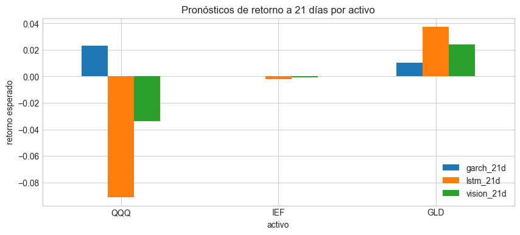
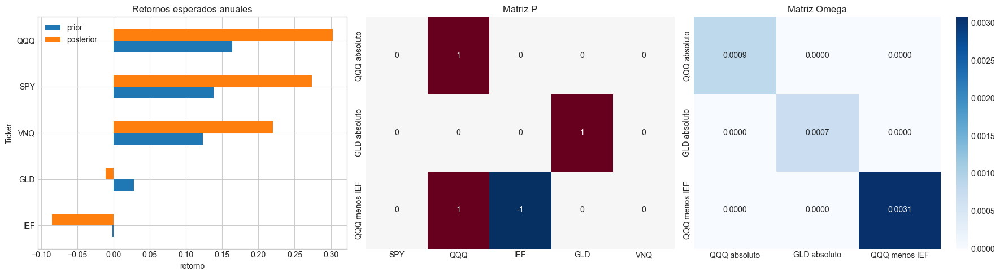
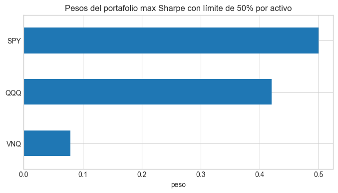

9.1. Perspectivas cuantitativas para Black-Litterman con PyPortfolioOpt#
En este cuaderno construiremos una versión aplicada del modelo de Black-Litterman usando datos reales de Yahoo Finance y la librería PyPortfolioOpt. (Descargar diapositivas )
Si quieres ampliar el concepto de redes neuronales para series de tiempo puedes ver las dipositivas: (Descargar diapositivas series de tiempo)
Objetivos#
Descargar precios históricos de un conjunto de ETFs desde Yahoo Finance.
Estimar la distribución previa del mercado usando capitalizaciones aproximadas y la matriz de covarianzas.
Generar visiones cuantitativas sobre los activos con dos enfoques de pronóstico:
un modelo ARCH-GARCH,
una red neuronal LSTM.
Automatizar la construcción de las matrices \(P\), \(Q\) y \(\Omega\).
Obtener los retornos posteriores del modelo de Black-Litterman y un portafolio resultante.
La idea central es que las visiones no se escriben manualmente, sino que se producen a partir de señales pronosticadas con modelos de series de tiempo.
Flujo del ejercicio#
Trabajaremos con el universo SPY, QQQ, IEF, GLD y VNQ.
SPYrepresenta una aproximación al mercado accionario amplio y nos servirá para inferir la aversión al riesgo del mercado.QQQ,IEFyGLDserán los activos sobre los que construiremos visiones cuantitativas.VNQse mantiene en el universo para observar cómo cambia la asignación posterior del portafolio.
Las visiones se expresarán a un horizonte de 21 días hábiles y luego se anualizarán para que sean comparables con los retornos implícitos del modelo.
[1]:
import os
os.environ["TF_CPP_MIN_LOG_LEVEL"] = "2"
import warnings
warnings.filterwarnings("ignore")
import numpy as np
import pandas as pd
import matplotlib.pyplot as plt
import seaborn as sns
import yfinance as yf
from arch import arch_model
from sklearn.metrics import mean_squared_error
from sklearn.preprocessing import MinMaxScaler
import tensorflow as tf
from tensorflow import keras
from tensorflow.keras import layers
from pypfopt import black_litterman, risk_models
from pypfopt.black_litterman import BlackLittermanModel
from pypfopt.efficient_frontier import EfficientFrontier
np.random.seed(42)
tf.keras.utils.set_random_seed(42)
plt.style.use("seaborn-v0_8-whitegrid")
pd.options.display.float_format = "{:,.4f}".format
[2]:
tickers = ["SPY", "QQQ", "IEF", "GLD", "VNQ"]
view_assets = ["QQQ", "IEF", "GLD"]
start_date = "2020-01-01"
end_date = pd.Timestamp.today().strftime("%Y-%m-%d")
horizon = 21
tau = 0.05
raw_prices = yf.download(
tickers,
start=start_date,
end=end_date,
auto_adjust=True,
progress=False,
)
if isinstance(raw_prices.columns, pd.MultiIndex):
prices = raw_prices["Close"].dropna(how="all")
else:
prices = raw_prices.copy()
if "Close" in prices.columns:
prices = prices[["Close"]]
prices.columns = tickers[:1]
prices = prices.dropna()
returns = prices.pct_change().dropna()
def yahoo_market_size(ticker):
fallback_sizes = {
"SPY": 550e9,
"QQQ": 320e9,
"IEF": 35e9,
"GLD": 65e9,
"VNQ": 35e9,
}
ticker_obj = yf.Ticker(ticker)
size_candidates = []
try:
fast_info = getattr(ticker_obj, "fast_info", {})
if hasattr(fast_info, "get"):
size_candidates.append(fast_info.get("market_cap"))
except Exception:
pass
try:
info = ticker_obj.info
size_candidates.extend(
[
info.get("marketCap"),
info.get("totalAssets"),
info.get("enterpriseValue"),
]
)
except Exception:
pass
return float(
next(
(
value
for value in size_candidates
if value is not None and pd.notna(value) and value > 0
),
fallback_sizes[ticker],
)
)
market_caps = pd.Series(
{ticker: yahoo_market_size(ticker) for ticker in tickers},
name="tamano_mercado_proxy",
)
print(f"Muestra de precios desde {prices.index.min().date()} hasta {prices.index.max().date()}")
display(prices.tail())
display((market_caps / 1e9).rename("USD miles de millones"))
Muestra de precios desde 2020-01-02 hasta 2026-03-18
| Ticker | GLD | IEF | QQQ | SPY | VNQ |
|---|---|---|---|---|---|
| Date | |||||
| 2026-03-12 | 466.8800 | 95.6900 | 597.2600 | 666.0600 | 92.0100 |
| 2026-03-13 | 460.8400 | 95.5900 | 593.7200 | 662.2900 | 92.1600 |
| 2026-03-16 | 460.4300 | 96.0200 | 600.3800 | 669.0300 | 92.9300 |
| 2026-03-17 | 459.2700 | 96.1900 | 603.3100 | 670.7900 | 93.3400 |
| 2026-03-18 | 444.7400 | 95.7500 | 594.9000 | 661.4300 | 91.9600 |
SPY 602.7075
QQQ 231.8347
IEF 13.9507
GLD 110.1538
VNQ 33.7883
Name: USD miles de millones, dtype: float64
Paso 1. Distribución previa implícita del mercado#
Usaremos:
la covarianza muestral anualizada de los precios,
una proxy del tamaño de mercado obtenida desde Yahoo Finance,
la serie de
SPYpara estimar la aversión al riesgo del mercado.
Con esto obtenemos el vector previo \(\pi\) antes de incorporar las visiones.
[3]:
cov_matrix = risk_models.sample_cov(prices, frequency=252)
market_prices = prices["SPY"]
delta = black_litterman.market_implied_risk_aversion(market_prices)
pi = black_litterman.market_implied_prior_returns(
market_caps.to_dict(),
delta,
cov_matrix,
)
prior_table = pd.DataFrame(
{
"peso_mercado": market_caps / market_caps.sum(),
"retorno_implícito_anual": pi,
}
).sort_values("peso_mercado", ascending=False)
print(f"Aversión al riesgo implícita del mercado (delta): {delta:,.4f}")
display(prior_table)
Aversión al riesgo implícita del mercado (delta): 3.5658
| peso_mercado | retorno_implícito_anual | |
|---|---|---|
| SPY | 0.6073 | 0.1377 |
| QQQ | 0.2336 | 0.1636 |
| GLD | 0.1110 | 0.0285 |
| VNQ | 0.0340 | 0.1237 |
| IEF | 0.0141 | -0.0013 |
Paso 2. Pronóstico de visiones con ARCH-GARCH y LSTM#
Ahora construiremos las visiones de manera cuantitativa.
Para cada activo seleccionado estimaremos un retorno esperado a 21 días con dos modelos:
un modelo
ARCH-GARCHpara capturar persistencia de varianza y dinámica lineal del retorno medio,una
LSTMpara capturar patrones no lineales en la serie de retornos.
La visión final de cada activo se construirá con el promedio de ambos pronósticos. Luego convertiremos ese retorno de 21 días a una tasa anual equivalente para alimentar el modelo de Black-Litterman.
[4]:
def compound_returns(daily_returns):
return float(np.prod(1 + np.asarray(daily_returns)) - 1)
def annualize_horizon_return(period_return, horizon=21):
return float((1 + period_return) ** (252 / horizon) - 1)
def garch_view_forecast(series, horizon=21):
clean_series = series.dropna().astype(float)
scaled_series = clean_series * 100
model = arch_model(
scaled_series,
mean="AR",
lags=1,
vol="GARCH",
p=1,
q=1,
dist="normal",
rescale=False,
)
result = model.fit(disp="off")
forecast = result.forecast(horizon=horizon, reindex=False)
daily_mean = forecast.mean.iloc[-1].to_numpy() / 100
daily_variance = forecast.variance.iloc[-1].to_numpy() / 10000
return {
"forecast_21d": compound_returns(daily_mean),
"volatility_21d": float(np.sqrt(np.sum(daily_variance))),
"model": result,
}
def make_sequences(values, lookback):
X, y = [], []
for idx in range(lookback, len(values)):
X.append(values[idx - lookback:idx])
y.append(values[idx])
return np.asarray(X), np.asarray(y)
def lstm_view_forecast(series, lookback=20, horizon=21, epochs=20):
clean_series = series.dropna().astype(float)
scaler = MinMaxScaler()
scaled_values = scaler.fit_transform(clean_series.to_numpy().reshape(-1, 1))
X, y = make_sequences(scaled_values, lookback)
split_idx = int(len(X) * 0.8)
X_train, X_val = X[:split_idx], X[split_idx:]
y_train, y_val = y[:split_idx], y[split_idx:]
model = keras.Sequential(
[
layers.Input(shape=(lookback, 1)),
layers.LSTM(24),
layers.Dense(12, activation="relu"),
layers.Dense(1),
]
)
model.compile(optimizer="adam", loss="mse")
callbacks = [keras.callbacks.EarlyStopping(patience=5, restore_best_weights=True)]
model.fit(
X_train,
y_train,
validation_data=(X_val, y_val),
epochs=epochs,
batch_size=16,
verbose=0,
callbacks=callbacks,
)
recursive_window = scaled_values[-lookback:].reshape(1, lookback, 1)
future_scaled = []
for _ in range(horizon):
next_scaled = model.predict(recursive_window, verbose=0)[0, 0]
future_scaled.append(next_scaled)
next_step = np.array([[[next_scaled]]])
recursive_window = np.concatenate([recursive_window[:, 1:, :], next_step], axis=1)
future_returns = scaler.inverse_transform(np.array(future_scaled).reshape(-1, 1)).ravel()
val_predictions = scaler.inverse_transform(model.predict(X_val, verbose=0)).ravel()
val_true = scaler.inverse_transform(y_val.reshape(-1, 1)).ravel()
return {
"forecast_21d": compound_returns(future_returns),
"rmse": float(np.sqrt(mean_squared_error(val_true, val_predictions))),
"model": model,
}
[6]:
forecast_store = {}
forecast_rows = []
for asset in view_assets:
garch_output = garch_view_forecast(returns[asset], horizon=horizon)
lstm_output = lstm_view_forecast(returns[asset], horizon=horizon, epochs=20)
blended_21d = 0.5 * (garch_output["forecast_21d"] + lstm_output["forecast_21d"])
blended_annual = annualize_horizon_return(blended_21d, horizon=horizon)
disagreement = abs(garch_output["forecast_21d"] - lstm_output["forecast_21d"])
horizon_vol = returns[asset].rolling(63).std().iloc[-1] * np.sqrt(horizon)
confidence = float(np.clip(1 - disagreement / (horizon_vol + 1e-6), 0.25, 0.85))
forecast_store[asset] = {
"garch": garch_output,
"lstm": lstm_output,
"blended_21d": blended_21d,
"blended_annual": blended_annual,
"confidence": confidence,
}
forecast_rows.append(
{
"activo": asset,
"garch_21d": garch_output["forecast_21d"],
"lstm_21d": lstm_output["forecast_21d"],
"vision_21d": blended_21d,
"vision_anual": blended_annual,
"confianza": confidence,
"volatilidad_garch_21d": garch_output["volatility_21d"],
"rmse_lstm": lstm_output["rmse"],
}
)
forecast_table = pd.DataFrame(forecast_rows).set_index("activo")
display(forecast_table)
ax = forecast_table[["garch_21d", "lstm_21d", "vision_21d"]].plot(
kind="bar",
figsize=(10, 4),
title="Pronósticos de retorno a 21 días por activo",
)
ax.set_ylabel("retorno esperado")
plt.xticks(rotation=0)
plt.show()
| garch_21d | lstm_21d | vision_21d | vision_anual | confianza | volatilidad_garch_21d | rmse_lstm | |
|---|---|---|---|---|---|---|---|
| activo | |||||||
| QQQ | 0.0230 | -0.0909 | -0.0340 | -0.3397 | 0.2500 | 0.0587 | 0.0146 |
| IEF | 0.0002 | -0.0020 | -0.0009 | -0.0109 | 0.8141 | 0.0170 | 0.0035 |
| GLD | 0.0102 | 0.0375 | 0.0239 | 0.3275 | 0.7545 | 0.0664 | 0.0153 |

Paso 3. Automatización de \(P\), \(Q\) y \(\Omega\)#
Recordemos el significado de estas matrices en Black-Litterman:
\(P\) indica cómo cada visión se conecta con los activos del universo.
\(Q\) contiene el retorno esperado de cada visión.
\(\Omega\) representa la incertidumbre de las visiones.
En vez de escribir estas matrices manualmente, construiremos una tabla estructurada de visiones y luego dejaremos que PyPortfolioOpt genere \(\Omega\) con el esquema de Idzorek a partir de niveles de confianza. Así, la incertidumbre queda automatizada y consistente con las señales pronosticadas.
[7]:
view_specs = [
{
"nombre": "QQQ absoluto",
"weights": {"QQQ": 1.0},
"q": forecast_store["QQQ"]["blended_annual"],
"confidence": forecast_store["QQQ"]["confidence"],
},
{
"nombre": "GLD absoluto",
"weights": {"GLD": 1.0},
"q": forecast_store["GLD"]["blended_annual"],
"confidence": forecast_store["GLD"]["confidence"],
},
{
"nombre": "QQQ menos IEF",
"weights": {"QQQ": 1.0, "IEF": -1.0},
"q": forecast_store["QQQ"]["blended_annual"] - forecast_store["IEF"]["blended_annual"],
"confidence": float(
np.clip(
0.5 * (
forecast_store["QQQ"]["confidence"]
+ forecast_store["IEF"]["confidence"]
),
0.25,
0.85,
)
),
},
]
def build_view_matrices(assets, view_specs):
labels = [view["nombre"] for view in view_specs]
P = pd.DataFrame(0.0, index=labels, columns=assets)
Q = pd.Series(index=labels, dtype=float, name="Q")
confidences = pd.Series(index=labels, dtype=float, name="confianza")
for view in view_specs:
label = view["nombre"]
for asset, weight in view["weights"].items():
P.loc[label, asset] = weight
Q.loc[label] = view["q"]
confidences.loc[label] = view["confidence"]
return P, Q, confidences
P, Q, view_confidences = build_view_matrices(tickers, view_specs)
bl = BlackLittermanModel(
cov_matrix,
pi=pi,
P=P.values,
Q=Q.values,
omega="idzorek",
view_confidences=view_confidences.values,
tau=tau,
)
omega = pd.DataFrame(bl.omega, index=P.index, columns=P.index)
print("Matriz P")
display(P)
print("Vector Q")
display(Q.to_frame())
print("Confianzas usadas para Idzorek")
display(view_confidences.to_frame())
print("Matriz Omega resultante")
display(omega)
Matriz P
| SPY | QQQ | IEF | GLD | VNQ | |
|---|---|---|---|---|---|
| QQQ absoluto | 0.0000 | 1.0000 | 0.0000 | 0.0000 | 0.0000 |
| GLD absoluto | 0.0000 | 0.0000 | 0.0000 | 1.0000 | 0.0000 |
| QQQ menos IEF | 0.0000 | 1.0000 | -1.0000 | 0.0000 | 0.0000 |
Vector Q
| Q | |
|---|---|
| QQQ absoluto | -0.3397 |
| GLD absoluto | 0.3275 |
| QQQ menos IEF | -0.3288 |
Confianzas usadas para Idzorek
| confianza | |
|---|---|
| QQQ absoluto | 0.2500 |
| GLD absoluto | 0.7545 |
| QQQ menos IEF | 0.5321 |
Matriz Omega resultante
| QQQ absoluto | GLD absoluto | QQQ menos IEF | |
|---|---|---|---|
| QQQ absoluto | 0.0009 | 0.0000 | 0.0000 |
| GLD absoluto | 0.0000 | 0.0007 | 0.0000 |
| QQQ menos IEF | 0.0000 | 0.0000 | 0.0031 |
Paso 4. Retornos posteriores y portafolio resultante#
Una vez combinamos la distribución previa con las visiones, obtenemos un nuevo vector de retornos esperados y una nueva matriz de covarianzas.
A partir de estos parámetros posteriores podemos resolver un problema clásico de optimización de portafolios para observar cómo cambian los pesos recomendados.
[9]:
posterior_returns = bl.bl_returns()
posterior_cov = bl.bl_cov()
comparison = pd.DataFrame(
{
"prior": pi,
"posterior": posterior_returns,
"cambio_bp": (posterior_returns - pi) * 10_000,
}
).sort_values("posterior", ascending=False)
display(comparison)
ef = EfficientFrontier(
posterior_returns,
posterior_cov,
weight_bounds=(0.0, 0.50),
)
ef.max_sharpe(risk_free_rate=0.0)
weights = pd.Series(ef.clean_weights(), name="peso")
weights = weights[weights.abs() > 0]
display(weights.sort_values(ascending=False).to_frame())
fig, axes = plt.subplots(1, 3, figsize=(18, 5))
comparison[["prior", "posterior"]].sort_values("posterior").plot(
kind="barh",
ax=axes[0],
title="Retornos esperados anuales",
)
axes[0].set_xlabel("retorno")
sns.heatmap(P, annot=True, cmap="RdBu_r", center=0, cbar=False, ax=axes[1])
axes[1].set_title("Matriz P")
sns.heatmap(omega, annot=True, fmt=".4f", cmap="Blues", ax=axes[2])
axes[2].set_title("Matriz Omega")
plt.tight_layout()
plt.show()
weights.sort_values().plot(
kind="barh",
figsize=(8, 4),
title="Pesos del portafolio max Sharpe con límite de 50% por activo",
)
plt.xlabel("peso")
plt.show()
| prior | posterior | cambio_bp | |
|---|---|---|---|
| Ticker | |||
| QQQ | 0.1636 | 0.3025 | 1,389.5289 |
| SPY | 0.1377 | 0.2738 | 1,360.7948 |
| VNQ | 0.1237 | 0.2201 | 964.3321 |
| GLD | 0.0285 | -0.0110 | -395.3175 |
| IEF | -0.0013 | -0.0849 | -835.8591 |
| peso | |
|---|---|
| SPY | 0.5000 |
| QQQ | 0.4205 |
| VNQ | 0.0795 |


Lectura económica de los resultados#
Si una visión tiene alta confianza, su efecto en los retornos posteriores será mayor y el correspondiente elemento diagonal de \(\Omega\) será menor.
Si dos modelos de pronóstico discrepan mucho, la confianza asignada cae y la visión pesa menos dentro de Black-Litterman.
La matriz \(P\) permite mezclar visiones absolutas y relativas sin cambiar la lógica del flujo.
Este enfoque es útil cuando se desea conectar modelos predictivos con asignación táctica de portafolios de una forma sistemática y reproducible.
Taller de clase: Black-Litterman con matriz de perspectivas modelada#
Objetivo del taller#
Diseñar y justificar un portafolio con el modelo de Black-Litterman donde la matriz de perspectivas se construya a partir de pronósticos cuantitativos.
Cada equipo debe elegir una de estas dos rutas:
Ruta A (retornos): el modelo pronostica retornos esperados de los activos.Ruta B (volatilidad): el modelo pronostica volatilidad y ustedes traducen esa señal a perspectivas de retorno relativo o absoluto con una regla explícita.
Pueden usar el modelo que prefieran: ARIMA, Prophet, GARCH, LSTM, XGBoost, Random Forest, etc.
Requisitos mínimos#
Elegir 4 activos entre los que ya vienen trabajando (acciones o ETFs) y descargar datos de Yahoo Finance.
Construir la distribución previa del mercado (\(\pi\)) con
PyPortfolioOpt.Definir al menos 3 visiones, con al menos:
una visión absoluta,
una visión relativa (activo A vs activo B).
Construir explícitamente \(P\), \(Q\) y los niveles de confianza por visión.
Generar \(\Omega\) de forma consistente (por ejemplo con
idzorek).Obtener retornos posteriores y resolver un portafolio óptimo.
Comparar resultados contra un benchmark (igual ponderado o market-cap proxy).
Preguntas guía para el reporte#
¿Por qué eligieron ese modelo de pronóstico?
¿Cómo transformaron el pronóstico en una visión de Black-Litterman?
¿Cómo definieron la confianza de cada visión?
¿Qué activos ganan y cuáles pierden peso frente al apriori?
¿Qué tan sensible es el resultado si cambian \(\tau\) o las confianzas?
Entregables#
Tabla final con \(P\), \(Q\), confianzas y \(\Omega\).
Gráfico de pesos del portafolio posterior.
Conclusiones